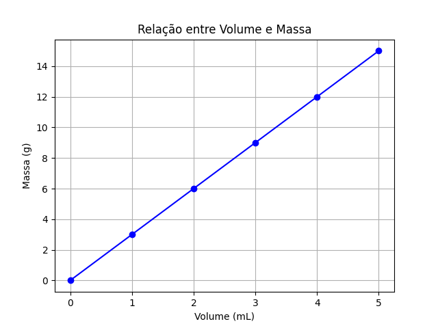

Table of Contents
Pré-física
Grandezas e Unidades de Medida
As grandezas físicas são conceitos aos quais podemos atribuir valores numéricos, enquanto que as unidades de medida são padrões de medida para cada grandeza correspondente.
Na tabela abaixo estão algumas grandezas físicas com correspondentes unidades de medida:
| Grandeza | Unidade (Nome) | Unidade (Símbolo) |
|---|---|---|
| Massa | Quilograma, Grama | kg, g |
| Volume | Litro, Mili-litro | L, mL |
| Densidade | Grama por mili-litro | g/mL |
| Comprimento | Metro, Centímetro | m, cm |
| Tempo | Hora, Segundo | h, s |
Equações
As equações na física são relações matemáticas entre grandezas. Considere os seguintes dados de uma substância hipotética:
| Massa (g) | Volume (mL) | Densidade (g/mL) |
|---|---|---|
| 3,0 | 1,0 | 3,0 |
| 6,0 | 2,0 | 3,0 |
| \( ? \) | 2,5 | 3,0 |
| 10,5 | \( ? \) | 3,0 |
| 15,0 | 5,0 | \( ? \) |
A densidade é calculada dividindo a massa pelo volume. Essa relação pode ser escrita como:
\begin{equation} d = \frac{m}{V} \end{equation}Onde:
- \( m \) = massa
- \( V \) = volume
- \( d \) = densidade
Com dois valores conhecidos, podemos calcular o terceiro.
Gráficos
Gráficos são ferramentas visuais importantes para representar dados e relações entre grandezas físicas. Eles ajudam a identificar padrões e tendências.
Como exemplo, os dados abaixo,
| Volume (mL) | Massa (g) |
|---|---|
| 1,0 | 3,0 |
| 2,0 | 6,0 |
| 3,0 | 9,0 |
| 4,0 | 12,0 |
| 5,0 | 15,0 |
Podem ser representados pela figura

Figure 1: Gráfico que relaciona os valores de massa e volume da tabela anterior.
Grandezas diretamente proporcionais e grandezas inversamente proporcionais
Grandezas proporcionais são grandezas que crescem (ou descressem) na mesma proporção. Ou seja, se uma delas dobra o seu valor, a outra também dobra o seu valor. Se uma cresce triplica, a outra também triplica o seu valor. Como exemplo, a relação entre a grandeza distância percorrida e a grandeza tempo de percurso percorrida com uma certa velocidade constante (valor fixo) de 20m/s) , representada na tabela abaixo:
| Distância percorrida (m) | Tempo de percuso (s) |
|---|---|
| 20 | 1,0 |
| 40 | 2,0 |
| 80 | 4,0 |
| 100 | 5,0 |
Podemos perceber que a razão entre os dois valores correspondentes se mantêm:
\begin{equation*} \frac{20}{1}=\frac{40}{2}=\frac{80}{4}=\frac{100}{5} \end{equation*}A notação matemática para essa correspondência de proporcionalidade direta pode ser uma das três possibilidades abaixo:
\begin{equation} d \sim t \qquad \text{ou} \qquad \frac{d}{t} = {constante} \qquad \text{ou} \qquad \frac{d_1}{t_1}=\frac{d_2}{t_2} \end{equation}Onde:
\( d \) = Distância percorrida,
\( t \) = Tempo de percurso.
Já grandezas inversamente proporcionais são aquelas em que, quando uma cresce (aumenta), a outra decresce (diminui) na mesma proporção. Como exemplo as grandezas velocidade e tempo decorrido para percorrer uma distância fixa de 20 m representadas na Tabela abaixo:
| Velocidade | Tempo para percorrer 20 m |
|---|---|
| 1,0 m/s | 20,0 s |
| 2,0 m/s | 10,0 s |
| 5,0 m/s | 4,0 s |
| 10,0 m/s | 2,0 s |
Nesse caso podemos perceber que é o produto entre as grandezas que se mantêm constante:
\begin{equation*} 1 \times 20 = 2\times 10 = 5 \times 4 = 10 \times 2 \end{equation*}Temos as seguintes possíveis representações matemáticas para duas grandezas inversamente proporcionais:
\begin{equation} v \sim \frac{1}{t} \qquad \text{ou} \qquad v\cdot t = \text{constante} \qquad \text{ou} \qquad v_1\cdot t_1 = v_2 \cdot t_2 \end{equation}Onde:
\( v \) = velocidade,
e
\( t \) = Tempo de percurso.
Questões de revisão: Grandezas diretamente proporcionais e grandezas inversamente proporcionais
Operações com frações
Soma de frações
Para somar frações precisamos de um múltiplo comum. Em geral, escolhemos o Mínimo Múltiplo Comum (m.m.c). Exemplo:
\[\frac{2}{3} + \frac{3}{2} = \frac{2\cdot 2 + 3 \cdot 3}{6} =\frac{4+9}{6}= \frac{13}{6}\]
subtração de frações
A subtração é análoga.
\[\frac{3}{4} - \frac{2}{3} = \frac{3\cdot 3 - 4\cdot 2 }{12}=\frac{1}{12}\]
Multiplicação de frações
\[\frac{3}{2}\cdot \frac{2}{3} = \frac {3\cdot 2}{2\cdot 3} = \frac{6}{6}=1\]
Divição de frações
\[ \frac{3}{4}:\frac{6}{2} = \frac{3}{4}\cdot\frac{2}{6} = \frac{1}{4}\cdot\frac{2}{2} = \frac{1}{4} \]
Potência de 10 e prefixos do SI
Potenciação
Definição: \(a^n = \underbrace{a \times a \times \cdots \times a}_{n \text{ vezes}}\), para \(n\) inteiro positivo. Onde \(a\) é a base e \(n\) é o expoente.
Exemplos:
- \(2^3 = 2 \times 2 \times 2 = 8\)
- \(5^2 = 25\)
- \(10^4 = 10 \times 10 \times 10 \times 10 = 10000\)
Casos especiais:
- \(a^1 = a\)
- \(a^0 = 1\) (para \(a \neq 0\))
- \(a^{-n} = \frac{1}{a^n}\) (para \(a \neq 0\))
Propriedades da potenciação
Para bases iguais, valem as seguintes propriedades:
- Multiplicação: \(a^m \cdot a^n = a^{m+n}\)
- Divisão: \(\frac{a^m}{a^n} = a^{m-n}\) (para \(a \neq 0\))
- Potência de potência: \((a^m)^n = a^{m \cdot n}\)
- Potência de produto: \((a \cdot b)^n = a^n \cdot b^n\)
- Potência de quociente: \(\left(\frac{a}{b}\right)^n = \frac{a^n}{b^n}\) (para \(b \neq 0\))
Exemplos:
- \(2^3 \cdot 2^4 = 2^{7} = 128\)
- \(\frac{3^5}{3^2} = 3^{3} = 27\)
- \((4^2)^3 = 4^{6} = 4096\)
- \((2 \cdot 5)^3 = 2^3 \cdot 5^3 = 8 \cdot 125 = 1000\)
- \(\left(\frac{2}{3}\right)^4 = \frac{2^4}{3^4} = \frac{16}{81}\)
Potência de dez
Potências de dez são usadas para representar números muito grandes ou muito pequenos de forma compacta.
\(10^n = 1\) seguido de \(n\) zeros, para \(n\) positivo. \(10^{-n} = \frac{1}{10^n} = 0,\underbrace{00\ldots0}_{n-1 \text{ zeros}}1\)
Exemplos:
- \(10^3 = 1000\)
- \(10^6 = 1.000.000\) (um milhão)
- \(10^{-2} = 0,01\)
- \(10^{-5} = 0,00001\)
Notação científica: um número é escrito como \(a \times 10^n\), onde \(1 \leq a < 10\) e \(n\) é um inteiro.
Exemplos:
- \(3000 = 3 \times 10^3\)
- \(0,00045 = 4,5 \times 10^{-4}\)
- \(5.230.000 = 5,23 \times 10^6\)
Prefixos do SI
O Sistema Internacional de Unidades (SI) utiliza prefixos para denotar múltiplos e submúltiplos das unidades, baseados em potências de dez.
| Prefixo | Símbolo | Fator (potência de 10) | Exemplo |
|---|---|---|---|
| yotta | Y | \(10^{24}\) | 1 Yg = 1024 g |
| zetta | Z | \(10^{21}\) | 1 Zg = 1021 g |
| exa | E | \(10^{18}\) | 1 Eg = 1018 g |
| peta | P | \(10^{15}\) | 1 Pg = 1015 g |
| tera | T | \(10^{12}\) | 1 Tg = 1012 g |
| giga | G | \(10^{9}\) | 1 Gg = 109 g |
| mega | M | \(10^{6}\) | 1 Mg = 106 g |
| quilo | k | \(10^{3}\) | 1 kg = 103 g |
| hecto | h | \(10^{2}\) | 1 hg = 102 g |
| deca | da | \(10^{1}\) | 1 dag = 101 g |
| deci | d | \(10^{-1}\) | 1 dg = 10-1 g |
| centi | c | \(10^{-2}\) | 1 cg = 10-2 g |
| mili | m | \(10^{-3}\) | 1 mg = 10-3 g |
| micro | µ | \(10^{-6}\) | 1 µg = 10-6 g |
| nano | n | \(10^{-9}\) | 1 ng = 10-9 g |
| pico | p | \(10^{-12}\) | 1 pg = 10-12 g |
| femto | f | \(10^{-15}\) | 1 fg = 10-15 g |
| atto | a | \(10^{-18}\) | 1 ag = 10-18 g |
| zepto | z | \(10^{-21}\) | 1 zg = 10-21 g |
| yocto | y | \(10^{-24}\) | 1 yg = 10-24 g |
Observação: os prefixos mais comuns no dia a dia são: quilo (k), mega (M), giga (G), tera (T), mili (m), micro (µ), nano (n), pico (p).
Exemplos de aplicação
- Um processador opera com frequência de 2,5 GHz. Isso significa \(2,5 \times 10^9\) Hz.
- A massa de um elétron é cerca de \(9,11 \times 10^{-31}\) kg.
- A distância entre a Terra e o Sol é aproximadamente \(1,5 \times 10^{11}\) m.
Exemplo final: Compreendendo a segunda lei de Newton a partir das relações de proporcionalidade
Uma das equações mais importnates para a mecânica é a equação que relaciona a massa, aceleração e força, que resulta da Segunda Lei de Newton. De forma simplificada ela pode ser escrita assim:
\( F = m \cdot a \)
Ou, para analizarmos do ponto de vista da aceleração, reescrevemos
\( a = \frac{F}{m} \)
Aqui, podemos compreendê-la a partir das noções de proporcionalidade aprendidas, considerando que a aceleração é proporcional a força,
\( a \sim F \)
e inversamente proporcional à massa:
\( a \sim \frac{1}{m}\)